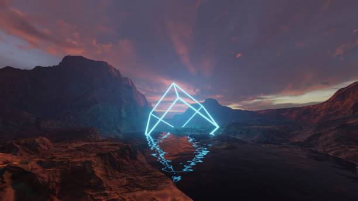

D10Sk4ll
Actuellement je suis élève en terminale section scientifique au lycée roumain-français Gheorghe Asachi de Chisinau, Moldavie. Tout au long de ma scolarité, j'ai développé un intérêt particulier pour les sciences et notamment l'informatique, les mathématiques et la physique.

Merci pour visiter mon site Chevalier Errant
Mtn la garde est terminée